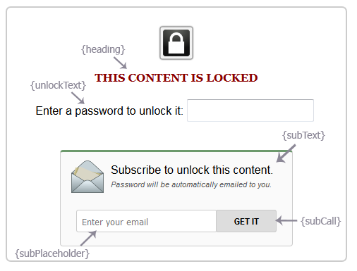
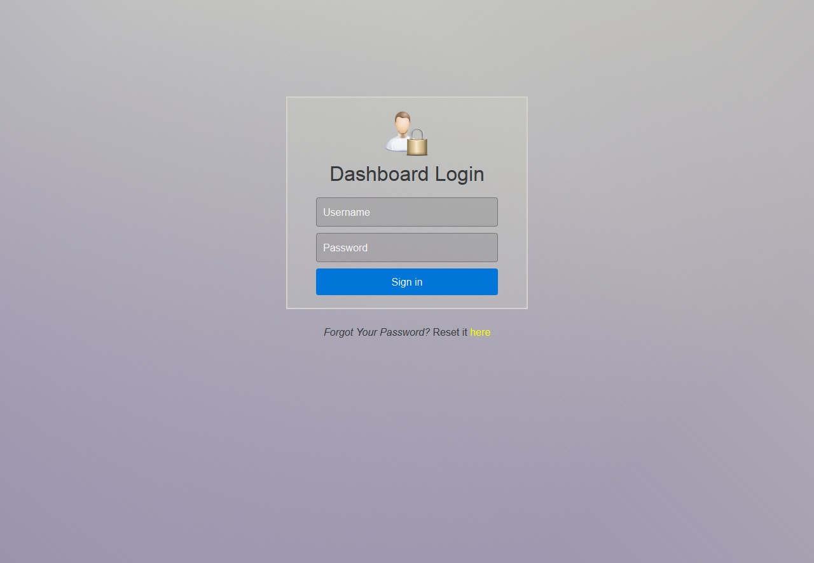
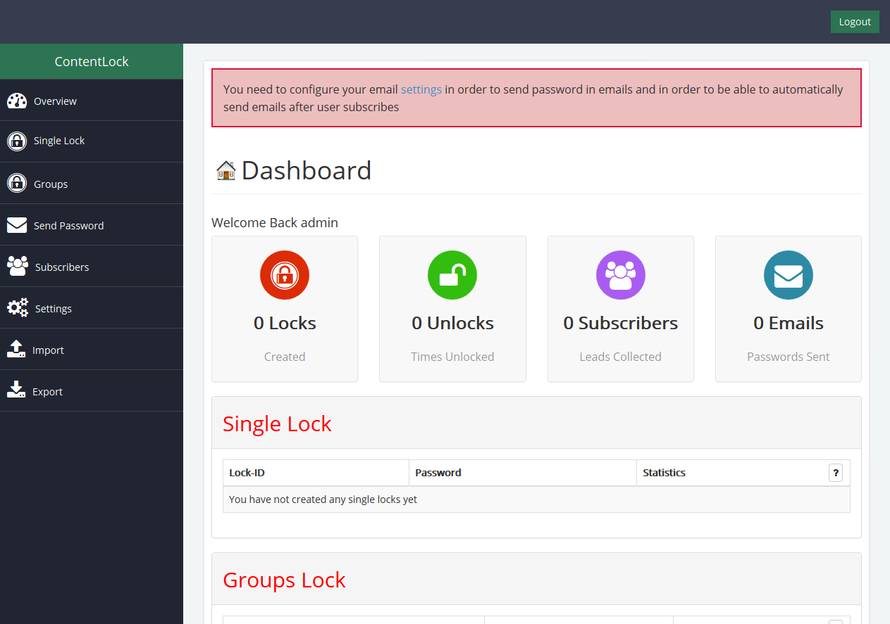
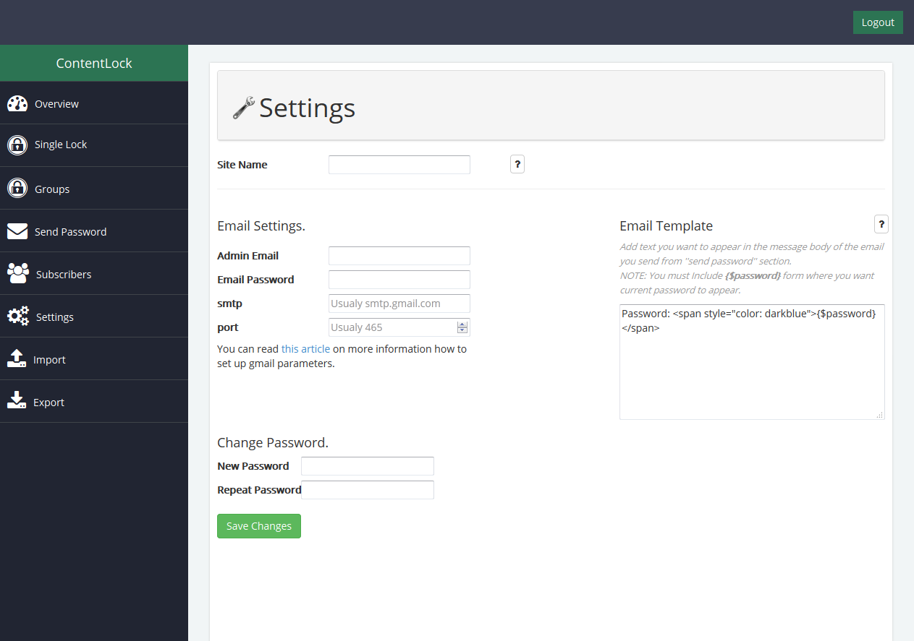

Introduction
First of all, let me say thanks you for choosing my product! Feel free to ask any question you might have regarding ContentLock.
ContentLock is universal content locking solution. Covered with powerful back-end admin dashboard where you can organize your locks, email them to selected users, or multiple recepients, or to all subscribers. You can monitor your statistics and collect new leads with simple content locking.
Ask your visitors to subscribe (provide you an email address) in order to receive password for locked content. Subscribe form with automatic password sending is implemented with ContentLock plugin.
Create single Locks for individual content, or create a group lock, one password for multiple content.
Lock Any Content on web page - paragraphs (text), images, videos, downloads, or even web page itself.
Simple built-in support for locking downloads.
Fully automated system for collecting new subscribers.
What's included
- Admin folder: Contains the back-end files that will be used to install and use ContentLock Admin Dashboard.
- Source folder: Contains the main front-end scripts and styles that will be applied to your web site when locking the content.
- js folder: Contains the main ContentLock javascript.
- css folder: Contains the main ContentLock stylesheet
- images folder: Contains the main image for the ContentLock front-end display.
- Documentation folder: Contains the ContentLock documentation file.
- Example folder: Contains the example implementation of ContentLock.
- Readme.txt file: Contains quick instructions and general information for faster and easier access.
Browser compatibility
ContentLock is fully compatible with latest Chrome, Safari, Firefox and IE10+.
Dependencies
CSS
You need to include main stylesheet:
<link rel="stylesheet" type="text/css" href="css/contentlock.css" />
javascript
- jQuery library - version 1.9.1 or above
- And main plugin jQuery
<script type="text/javascript" src="js/jquery-1.9.1.min.js"></script>
<script type="text/javascript" src="js/contentlock.js"></script>
HTML Markup
Basic Guidliness
To lock any content, all you need to do is to pass it's parent or wrapper ID, or class when initializng ContentLock plugin, and add it data attribute for the lock or group ID. There is no any special html markup that needs to be applied here. Everything is done through automatically.
However there are few options that can be modified through the data attributes:
data-clThis is how you will assing a custom lock ID you created to any parent element you want to lock.data-groupThis is how you will assing a custom group lock ID you created to any parent element you want to lock.data-subox="true"If you want to include subscribe box in the locked data, just add mentioned attribute and pass ittrueargument. This will append subscribe box where visitor can enter his/her email that will be stored in you database and he/she will automatically receive email with requested password to unlock desired content.data-dwn="url-to-file". If you want to lock a download, all you need to do is to pass the download url to this data attribute, so after unlocking, it can start automatically. You can add some confirmation message instead of standard button or link that will show after unlocking.
Example usage - for locking a simple content for which you want to include subscribe box, and assign it a lock ID - clo356nu - which you previously created from the admin dashboard, this would be the markup:
<div id="someId" data-cl="clo356nu" data-subox="true">
<h3>This is A Locked Title</h3>
<p>Some content that visitor can read after unlocking this whole div</p>
<p>Everything that falls inside #someID div will be locked. </p>
</div>
Another example for video:
<div id="someId" data-cl="clo356nu" data-subox="true">
<iframe width="420" height="315" src="https://www.youtube.com/embed/tOJsUW5IWWE" frameborder="0" allowfullscreen></iframe>
</div>
Or for download:
<div id="someID" data-cl="clo356nu" data-subox="true" data-dwn="http://samplesite.com/download-url.rar">
<p>Your Download will start in a moment</p>
</div>
Initializing
To initialize ContentLock, call it on body element and pass it the #ID's of the containers that are holding the content you want to lock. There are few parameters that you can pass when initializing content lock. And there are two that are required - url parameter and containers whose content yo uwant to lock. If you do not upload admin folder in the same directorium where your site resides you have to specify url location of the admin folder that has to be placed somewhere on your server. And already mentioned - container parameter where you will apss ID's of the containers you want to lock.
Initializing with required arguments: (example)
$('body').contentLock({
url : 'path-to-admin-folder',
container : '#someID'
});
You must pass the right path to the admin folder if you have uploaded it somewhere outside your current directorium (in which your site resides) that has to be placed somewhere on your server. ContentLock jQuery front-end cannot operate without it's back-end.
For a full list of available options - go to options section of this documentation
Options
| Option | Default | Description |
| url | "admin" | PATH to the location where you have put admin folder. This is required argument as all main functions are proccessed in the back-end. Do not use full address like http://yoursite.com, use relative path like "admin" - if it resides in your current directorium (default), or "../admin" - if it is outside your current directorium, etc. |
| content | "" | ID's of the Containers that hold content you want to lock. You can add single ID, or multiple comma-separated ID's. For example: container: '#id, #id2, #id3'. This is also required argument |
| heading | "This Content Is Locked" | Heading that will be shown in the locked area beneath the lock icon. |
| unlockText | "Enter a password to unlock it:" | As it's name suggests this is a text to display as 'unlock' text next to the password field on the locked area. |
| subContainer | "" | Custom subscribe box container. If you want to place subscribe box inside sidebar or some other elemnet on your web page, just pass that container #id as subContainer argument when initializing. |
| subText | "Subscribe to unlock this content. Password will be automatically emailed to you." | Main text to appear next to the email image in the subscribe box. |
| subCall | "GET IT" | Button, or 'Call to action' text for the submit on the subscribe box. |
| subPlaceholder | "Enter your email" | Placeholder for the email field in the subscribe box. |
| successMsg | "Thanks. Password Has been emailed to you." | Message to show after visitor has successfuly opt-ed in for password. |
| failMsg | "Please, check your email address again, you must enter propper email." | Message to show if visitor has entered incorect email in subscribe box. |
| sendSucc | "Sent" | Text to display on the submit button of the subscribe box, at the moment that visitor has successfully subscribed. |
| sent | "Send Again" | Text to display on the submit button of the subscribe box, after visitor successfully subscribed. This text will be shown after sendSucc text which is shown at the moment visitor is subscribed. |
| sendAnimation | true | Enable/Disable sending animation for the submit button on subscribe box when user subscribes to get password for selected lock. |
| subscribeBox | "" | Your custom markup for the subscribe box. If you want to replace default subscribe box with you own, you can add your HTML code here. |
| beforeSubmit | function(){} | Callback function that fires the moment visitor clicks subscribe button but before success response is returned |
| onSuccess | function(){} | Callback function that fires after success response is returned (from subscribe form) |
| passChecked | function(){} | Callback function that fires after content is unlocked. |
Subscribe Box
You can edit most of the elements by passing those arguments when initializing plugin. Or you can create your custom subscribe box markup, but you must keep two things:
- Email input must have
class="cl-mail"and - button must have
cl-callclass in order for plugin to work propertelly.
cl-succ class where you want success/fail messages to show.
Admin Dashboard
ContentLock back-end is essential for fully functioning of ContentLock plugin. You need to upload admin folder to your server, and copy it's location (path to it's residing place) that will be passed as url argument when initializing ContentLock Plugin.
Installation
To start installation navigate to the http://your-site.com/path-to-admin-folder/ or go directly to the http://your-site.com/path-to-admin-folder/install/
01. Permissions Check
ContentLock requires inc and upload folders and /inc/config.php file (all located inside admin folder) to be writable, please ensure they are writable before proceeding with the installation.

If your installation screen matches the above, your folder permissions are correct. If there are errors, please CHMOD the required folders, or files to 777 to ensure they can be written to.
02. Database Setup
Enter your MySQL information and hit next. This requires inc folder to be writtable.

03. Create Admin Account
Create your Admin account that will have access to the ContentLock dashboard.

Installed
If you have done everything right, you will see installation successfull message like the one in the image..

By following provided link or by going to http://your-site-name.com/path-to-admin-folder/ you will be able to login to ContentLock dahsboard.
Getting Started
Once you log in to your admin dashboard, first thing you need to do is to configure the settings so you can send password in emails, and use subscribe box to automatically email password to the subscriber. You can either click on the link that is displayed in message or click on settings on the left from the dashboard menu.
Configuring The Settings
Fill in the neccessary information and hit Save Changes button.
That's it! You have set everything up and now you can navigate around ContentLock Dashboard. You can monitor your monthly performance - number of unlocks and new subscribers statistcs, or send passwords from Send password section, or create new locks - from single locks and groups sections.
Note
You must configure email settings if you want to send password and add subscribe box. Emails can't be sent unless you add your email information. This has been been tested with gmail but I can't guarantee it will work with other providers.Credits
List of the resources used with ContentLock